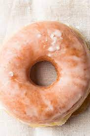

Krispy Kreme Donuts

An Image of a Glazed Doughnut
Ingredients
- 2 packs 1/4 ounce packages instant yeast or( 4 ½ teaspoons )yeast
- 1/3 cup warm water 105-115F / 40-46C
- 1 1/2 cup milk ( whole milk or low fat milk )
- 1/2 cup granulated sugar
- 1 teaspoon salt
- 2 Large eggs
- 1/3 cup (75 grams) butter or shortening , soften
- 5 cups all-purpose flour
- Canola oil for frying
Glazed Icing Ingredients
- ½ cup butter melted
- 2 cups powdered sugar
- 2 teaspoon vanilla
- 5-7 tablespoons evaporated milk
Steps
Doughnut Batter
- In a standing mixer, combine lukewarm water and yeast. Let it sit until dissolve for about 5 minutes.
- Meanwhile in a microwave safe medium bowl, heat milk for about 2 minutes. Remove and let it cool.
- Add, milk, sugar, salt, eggs, shortening or butter and 2 cups of flour to bowl of yeast.
- Mix for 2 minutes at medium speed. Add the remaining 3 cups of flour and continue mixing dough. Scraping down sides.
- Place dough in a large greased bowl. Cover loosely with a clean clothe and let rise in a warm, draft-free place for about 1 to 2 hours or until doubled.
- Roll dough out on a floured surface to about 1/4 inch thickness. Cut into doughnuts using a donut cutter or cookie cutter about one 1-inch and one 3 or 4-inch .Let stand for about 10 minutes.
- In a large sauce pan, pour vegetable oil until it is at least 3 inches (or about 5 centimeters) high and place on medium heat until oil is 375 degrees.
- Carefully drop doughnuts into hot oil, only a few at a time. Fry, turning once, for about 3 minutes or until golden brown. Drain on prepared paper towels
Doughnut Glaze
- In a microwave safe bowl melt the butter.
- Remove and stir in powdered sugar and vanilla extract until everything comes together
- Then evaporated milk (or sub water) until you have reached desired consistency
- Dip doughnuts in glaze and let it drip on the rack.
https://www.africanbites.com/krispy-kreme-doughnut-recipecopy-cat/